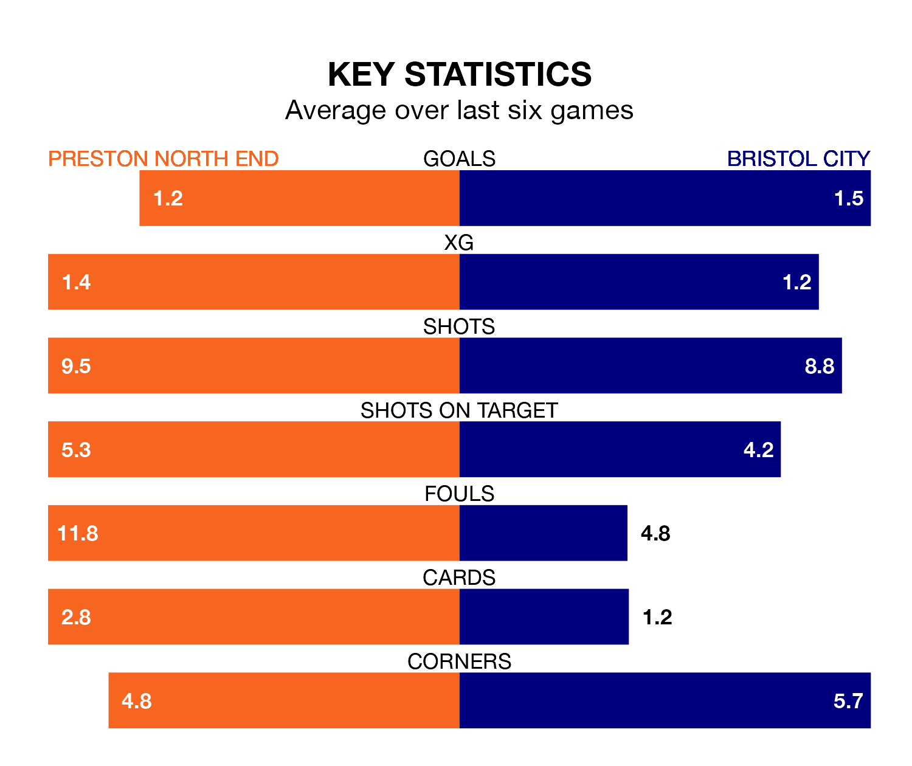

Preston North End host Bristol City on Saturday at Deepdale in the Championship.
In their last league match, on January 1, Preston lost to Sunderland 2-0 away.
City also lost, 1-0 at home against Millwall.
In the last 10 years, Preston and City have played each other on 20 occasions. Preston won eight of them, City three, and they drew nine times.
On average, the Lilywhites scored 1.4 goals and the Robins 1.0 in those matches.
Their last meeting was on August 5, when they played out a 1-1 draw.
Preston are in disappointing form in the Championship, with two wins and four losses from their last six games.
With three wins and a draw over that period, City's form is better – they have taken 10 points from 18, compared to North End's six.
With 30 goals in 26 games so far this season, the Robins are scoring at below the league average rate with 1.2 goals per game. But they are conceding fewer than average too, letting in 28 goals at a rate of 1.1 per game.
The Lilywhites are also below average scorers, with 1.2 goals per game, compared to a league average of 1.4. They have conceded 1.7 goals per game.
The hosts are 14th in the table after 26 games, of which they have won 10 and drawn five, earning 35 points.
The away side are three places ahead of Preston in 11th, with 10 wins and six draws putting them on 36 points.
Updated: 10:36, 03/01/24